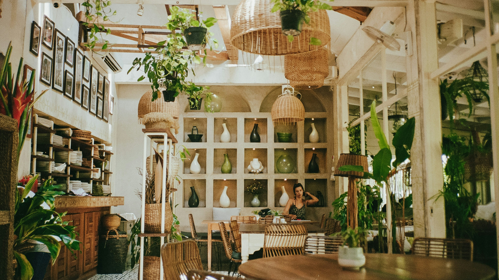
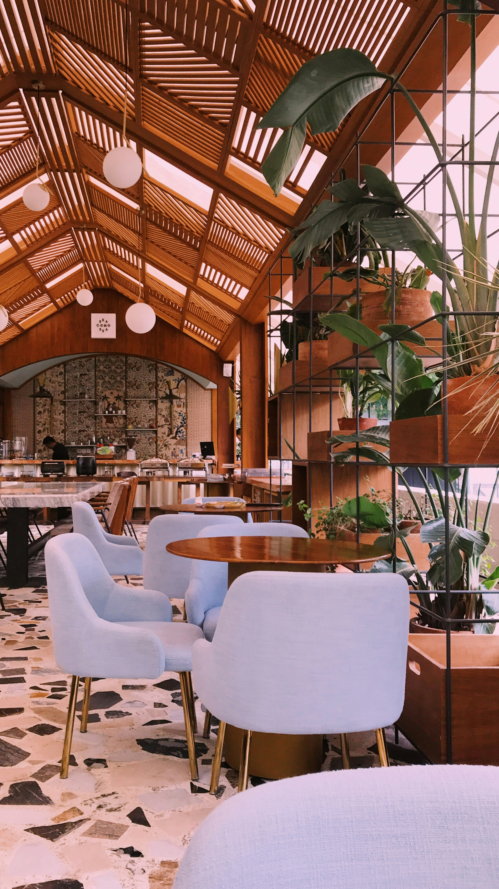
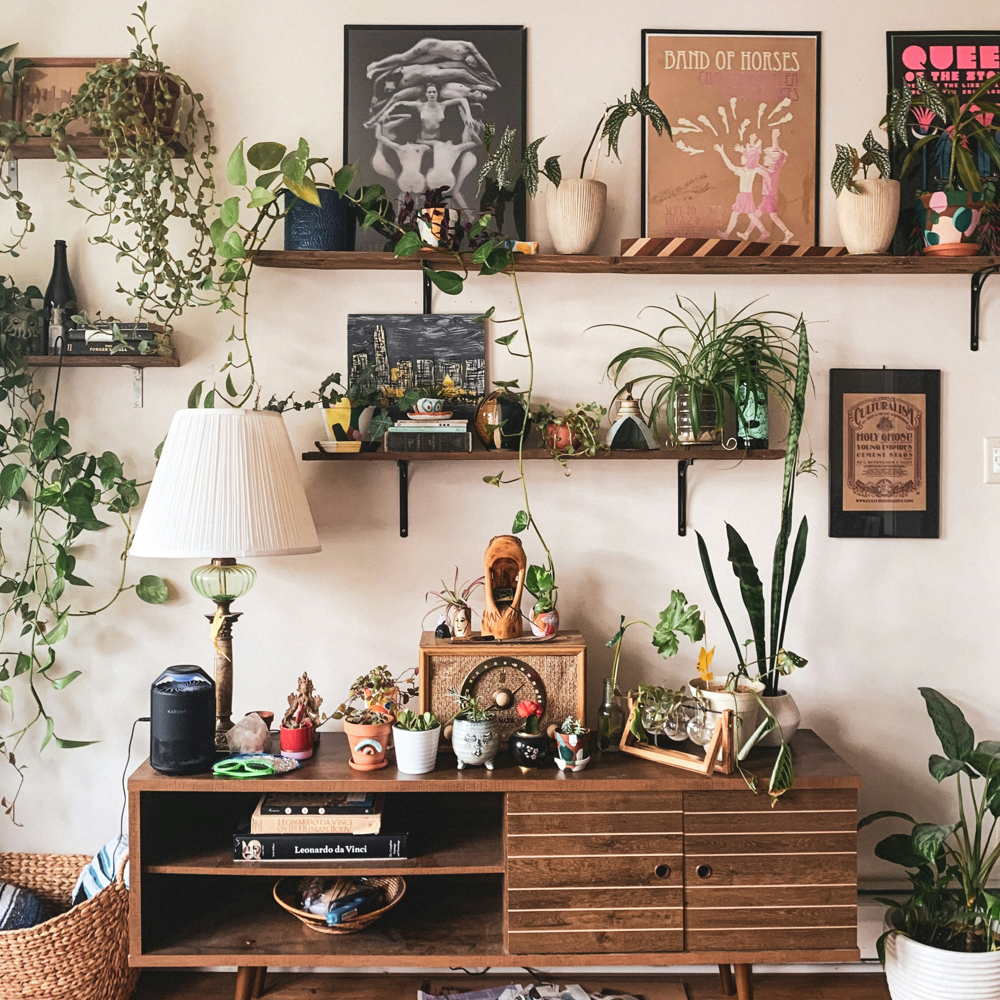

En Serefolia, nos enorgullece transformar cualquier ambiente en un oasis verde y acogedor.
A lo largo de los años, hemos trabajado en una variedad de proyectos que destacan nuestra pasión y dedicación por la
decoración con plantas.
Te mencionamos algunos de ellos
Nuestros servicios
- Residencias Privadas
- Hemos colaborado con propietarios de viviendas para crear jardines verticales en interiores, patios exuberantes y terrazas llenas de vida. Nuestro equipo se asegura de seleccionar las plantas adecuadas para cada espacio, teniendo en cuenta factores como la luz, la humedad y el estilo personal del cliente.
- Oficinas y Espacios Comerciales
- Sabemos que un entorno de trabajo verde puede mejorar la productividad y el bienestar. Por eso, hemos diseñado y ejecutado proyectos de decoración en oficinas, restaurantes y tiendas, utilizando plantas que no solo embellecen el espacio, sino que también purifican el aire y crean una atmósfera relajante.
- Eventos Especiales
- Desde bodas hasta eventos corporativos, nuestras instalaciones temporales con plantas han aportado un toque único y natural. Nos especializamos en crear escenarios impresionantes con arreglos florales y plantas que dejan una impresión duradera en los invitados.
- Proyectos a Medida
- Cada cliente es único, y por eso ofrecemos soluciones personalizadas que se adaptan a sus necesidades y preferencias. Nuestro equipo de diseñadores y expertos en botánica trabaja estrechamente con los clientes para materializar sus ideas, desde el concepto inicial hasta la ejecución final.
Nuestra misión es integrar la naturaleza en cada rincón, mejorando la calidad de vida y embelleciendo los entornos de nuestros clientes. ¡Explora nuestro portafolio y descubre cómo podemos transformar tu espacio con el poder de las plantas!





